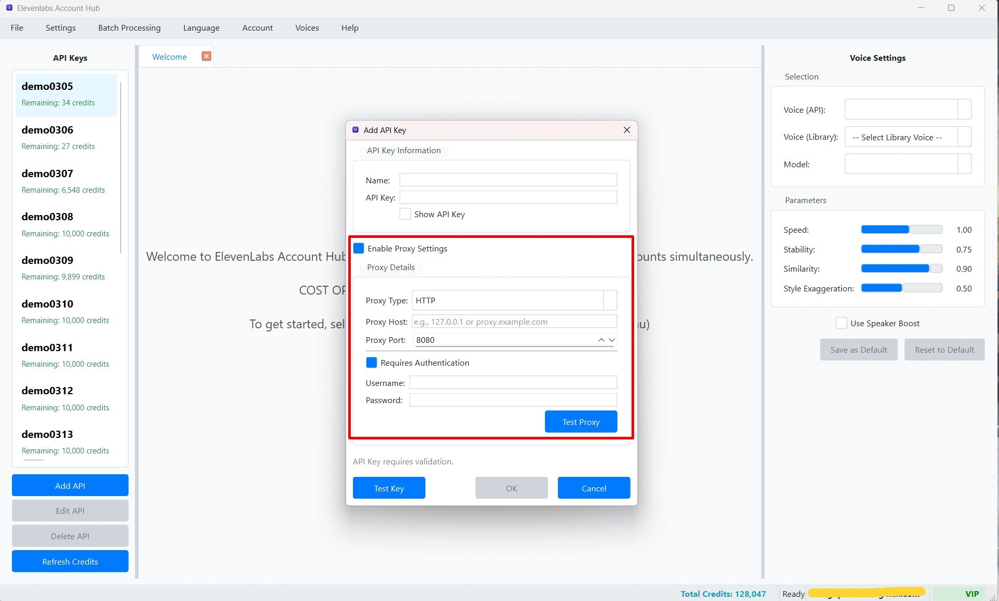

Cấu hình Proxy cho từng Khóa API
Tại sao cần Sử dụng Proxy cho Khóa API?
Khi bạn làm việc với nhiều tài khoản ElevenLabs, đặc biệt là các tài khoản miễn phí, việc sử dụng proxy cho mỗi Khóa API có thể mang lại một số lợi ích quan trọng:
- Tránh Giới hạn IP: ElevenLabs, giống như nhiều dịch vụ API khác, có thể áp đặt giới hạn về số lượng yêu cầu từ cùng một địa chỉ IP trong một khoảng thời gian nhất định. Sử dụng proxy cho phép mỗi Khóa API (hoặc một nhóm Khóa API) gửi yêu cầu từ một địa chỉ IP khác nhau, giúp giảm nguy cơ bị giới hạn hoặc tạm thời bị chặn do hoạt động quá nhiều từ một IP duy nhất.
- Tăng Tính Ẩn danh: Proxy giúp che giấu địa chỉ IP thực của bạn khi tương tác với API, tăng cường một lớp bảo vệ cho quyền riêng tư.
- Vượt qua Chặn Địa lý (Nếu có): Mặc dù ít phổ biến với ElevenLabs, trong một số trường hợp, proxy có thể giúp truy cập dịch vụ từ các vị trí địa lý khác nhau nếu có bất kỳ hạn chế nào dựa trên khu vực.
ElevenLabs Account Hub cho phép bạn cấu hình một máy chủ proxy riêng biệt cho từng Khóa API mà bạn thêm vào phần mềm. Khi Khóa API đó được sử dụng để thực hiện các yêu cầu đến ElevenLabs (ví dụ: kiểm tra tín dụng, lấy danh sách giọng nói, tạo TTS), tất cả các yêu cầu đó sẽ được định tuyến thông qua proxy đã được cấu hình cho khóa đó.
Cách Cấu hình Proxy cho một Khóa API
Bạn có thể thiết lập thông tin proxy khi thêm một Khóa API mới hoặc khi chỉnh sửa một Khóa API đã có.
- Mở cửa sổ "Quản lý Khóa API" (API Key Management).
- Trong cửa sổ này, tìm đến phần "Cấu hình Proxy" (Proxy Configuration).  (Hình ảnh: Khu vực cấu hình Proxy trong hộp thoại Quản lý Khóa API)
- Kích hoạt Proxy: Đánh dấu (check) vào ô "Bật Proxy" (Enable Proxy) để bắt đầu cấu hình. Nếu ô này không được đánh dấu, các cài đặt proxy bên dưới sẽ bị bỏ qua.
- Điền Thông tin Proxy:
- Loại Proxy (Proxy Type): Chọn loại giao thức proxy từ danh sách thả xuống. Các loại phổ biến được hỗ trợ bao gồm:
HTTPHTTPS(thường được xử lý giống như HTTP cho mục đích proxy client)SOCKS4SOCKS5
- Host Proxy: Nhập địa chỉ IP hoặc tên miền (hostname) của máy chủ proxy. Ví dụ:
123.45.67.89hoặcmyproxy.server.com. - Cổng Proxy (Port): Nhập số cổng mà máy chủ proxy đang lắng nghe. Ví dụ:
8080,3128,1080.
- Loại Proxy (Proxy Type): Chọn loại giao thức proxy từ danh sách thả xuống. Các loại phổ biến được hỗ trợ bao gồm:
- Xác thực Proxy (Proxy Authentication - Tùy chọn): Nếu máy chủ proxy của bạn yêu cầu tên người dùng và mật khẩu để truy cập:
- Đánh dấu (check) vào ô "Bật Xác thực" (Enable Authentication).
- Tên người dùng (Username): Nhập tên người dùng được cấp cho bạn để sử dụng proxy.
- Mật khẩu (Password): Nhập mật khẩu tương ứng với tên người dùng proxy. Mật khẩu này sẽ được mã hóa khi lưu vào cơ sở dữ liệu của ứng dụng.
- Kiểm tra Proxy (Test Proxy):
- Sau khi điền đầy đủ thông tin proxy, bạn nên nhấn nút "Kiểm tra Proxy" (Test Proxy).
- Phần mềm sẽ cố gắng thực hiện một kết nối thử nghiệm đến một dịch vụ bên ngoài (ví dụ:
https://httpbin.org/ip) thông qua cấu hình proxy bạn vừa nhập. - Một thông báo sẽ xuất hiện cho biết kết quả kiểm tra:
- Thành công: Proxy hoạt động và có thể kết nối ra ngoài.
- Thất bại: Có thể do thông tin proxy sai (host, port, loại, tài khoản), proxy không hoạt động, hoặc vấn đề mạng. Thông báo lỗi sẽ cố gắng cung cấp thêm chi tiết.
Mẹo: Luôn luôn "Kiểm tra Proxy" sau khi cấu hình hoặc thay đổi thông tin proxy để đảm bảo nó hoạt động chính xác trước khi lưu. Điều này giúp tránh các lỗi không mong muốn khi phần mềm cố gắng sử dụng proxy đó cho các yêu cầu API sau này. - Lưu Cấu hình: Sau khi đã điền và kiểm tra thông tin, nhấn nút "Lưu" (Save) trong cửa sổ "Quản lý Khóa API" để lưu lại cấu hình proxy cùng với các thông tin khác của Khóa API.
Lưu ý khi Sử dụng Proxy cho Khóa API
- Chất lượng Proxy: Hiệu suất và độ tin cậy của các yêu cầu API (bao gồm cả việc tạo TTS) sẽ phụ thuộc lớn vào chất lượng của proxy bạn sử dụng. Proxy chậm, không ổn định, hoặc thường xuyên bị chặn có thể gây ra lỗi hoặc làm chậm đáng kể quá trình làm việc.
- Loại Proxy Phù hợp: Đảm bảo bạn chọn đúng "Loại Proxy" (HTTP, SOCKS4, SOCKS5) mà nhà cung cấp proxy của bạn hỗ trợ và yêu cầu.
- Bảo mật Thông tin Proxy: Chỉ sử dụng proxy từ các nguồn đáng tin cậy. Mật khẩu proxy (nếu có) sẽ được mã hóa khi lưu trong cơ sở dữ liệu của ElevenLabs Account Hub, nhưng việc bảo vệ thông tin đăng nhập proxy của bạn nói chung vẫn rất quan trọng.
- Proxy Riêng vs. Proxy Pool:
- Cấu hình proxy theo hướng dẫn này là thiết lập một proxy riêng cho một Khóa API cụ thể.
- Phần mềm cũng hỗ trợ một Proxy Pool Chung. Khi tạo TTS, bạn có thể chọn sử dụng proxy từ Pool này thay vì proxy riêng đã cấu hình cho Khóa API (xem Sử dụng Proxy Pool khi Tạo TTS).
- Nếu bạn không bật "Sử dụng Proxy Pool" trong Bảng Cài đặt TTS, và Khóa API hiện tại có cấu hình proxy riêng được bật, thì proxy riêng đó sẽ được sử dụng.
- Kiểm tra Định kỳ: Nếu bạn gặp lỗi kết nối khi sử dụng một Khóa API có proxy, hãy thử kiểm tra lại cấu hình proxy đó hoặc thử một proxy khác.